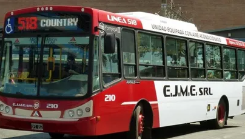

Conexión Aeropuerto Ezeiza
La Línea 518 de Empresa José María Ezeiza conecta el Aeropuerto Internacional Ministro Pistarini con la Estación de Tren de Ezeiza, facilitando el acceso al transporte público y las conexiones ferroviarias mediante el Ferrocarril Roca.
Este servicio es utilizado diariamente por pasajeros, trabajadores aeroportuarios y vecinos de la zona, permitiendo una conexión rápida y accesible entre el aeropuerto y distintos puntos urbanos del partido de Ezeiza.
Servicio Urbano Municipal
La Línea 518 funciona como un servicio de transporte local que vincula el aeropuerto con sectores urbanos y estaciones de conexión ferroviaria.
Conexión con el Tren Roca
El recorrido permite acceder a la Estación Ezeiza del Ferrocarril Roca, facilitando viajes hacia Plaza Constitución y otros destinos del Área Metropolitana de Buenos Aires.
Recorrido Estratégico
La línea atraviesa sectores clave del Aeropuerto Internacional Ezeiza, terminales de pasajeros y zonas urbanas importantes del municipio.